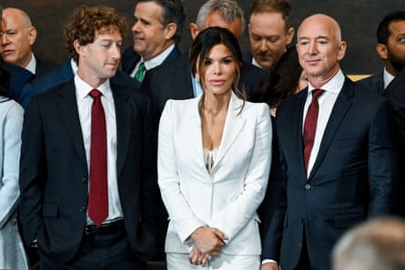
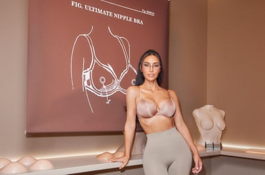
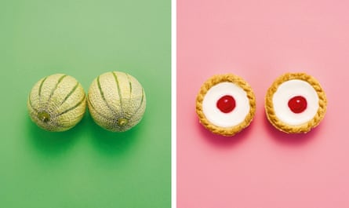
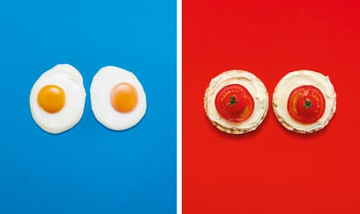
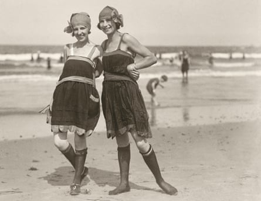
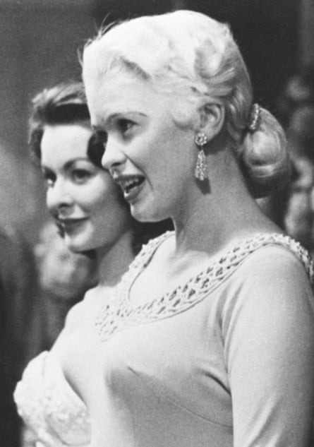
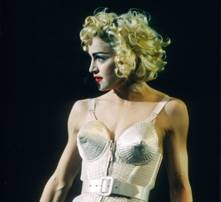
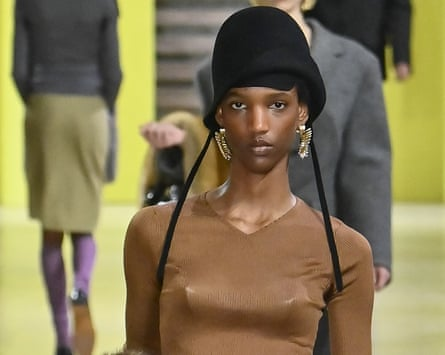
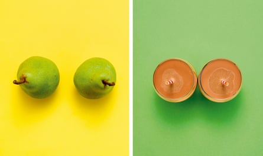
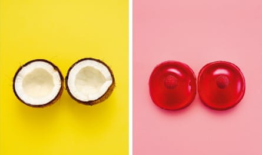

I t was, almost, a proud feminist moment. On inauguration day in January, the unthinkable happened. President Trump, the biggest ego on the planet, was upstaged by a woman in a white trouser suit – the proud uniform of Washington feminists, worn by Kamala Harris, Hillary Clinton and Alexandria Ocasio-Cortez in solidarity with the traditional colour of the suffragettes. In the event, the white trouser suit barely got a mention. The show was stolen by what was underneath: Lauren Sánchez’s cleavage, cantilevered under a wisp of white lace. The breasts of the soon-to-be Mrs Jeff Bezos were the ceremony’s breakout stars. The only talking point that came close was Mark Zuckerberg’s inability to keep his eyes off them.
Call it a curtain raiser for a year in which breasts have been – how to put this? – in your face. Sydney Sweeney’s pair have upstaged her acting career to the point that she wears a sweatshirt that says “Sorry for Having Great Tits and Correct Opinions”. Bullet bras are making a sudden comeback, in sugar-pink silk on Dua Lipa on the cover of British Vogue and nosing keen as shark fins under fine cashmere sweaters at the Miu Miu show at Paris fashion week. Perhaps most tellingly, Kim Kardashian, whose body is her business empire, has made a 180-degree pivot from monetising her famous backside to selling, in her Skims lingerie brand, push-up bras featuring a pert latex nipple – with or without a fake piercing – that make an unmissable point under your T-shirt. Not since Eva Herzigova was in her Wonderbra in 1994 – Hello Boys – have boobs been so, well, big.
Lauren Sánchez flanked by Mark Zuckerberg and Jeff Bezos at Trump’s inauguration …Photograph: Kenny Holston/Reuters

Sydney Sweeney on Saturday Night Live in 2024 …Photograph: NBC/Will Heath/Getty Images
… and Kim Kardashian modelling a bra from her lingerie line.Photograph: Skims
It is oddly tricky to discuss boobs without sounding as if you are in a doctor’s surgery or a fraternity house. The word breasts is rather formal. Boobs is fond and familiar, which feels right, but sniggery, which doesn’t. Bosoms are what you see in period dramas. Knockers, jugs, melons, hooters, fun bags? Whatever we call them, they are full of contradictions. Men see them and think of sex; babies see them and think of food. They contain a liquid without which the human race could not until recently have survived, but they are also one of the most tumour-prone parts of the body. You can admire them in the Uffizi, the Louvre and the National Gallery, but they are banned on Instagram (Free the nipple!). They are nursing Madonnas, and they are Madonna in a conical bra. They are topless goddesses and top shelf; entirely natural yet extremely rude; and they are, right now, absolutely everywhere.
T here is a whole lot going on here. In America, the impact of the Trump administration is going way beyond policy, reshaping culture at a granular level. The Maga ruling class has a thirst for busty women in tight clothes, which fuses something new – what Zuckerberg has called “masculine energy” – with nostalgia for 1950s America. (The “again” in Make America Great Again may not have a date stamp, but it comes with a white picket fence.) As a symbol of fertility, full breasts are catnip to a regime obsessed with breeding and keen to limit reproductive freedoms.
Boobs are in the eye of the storm of the current gender fluidity rollback, too. Nothing says boys will be boys and women should look like women more than Bezos’s Popeye biceps next to Sánchez’s lace-edged curves. They used to say that a picture was worth a thousand words; in today’s ultra-visual culture, that rate of exchange has steepened. The fact that a culture that was, until a few years ago, sensitively exploring gender as a complex issue has now regressed to the level of teenage boys watching American Pie for the first time says everything about how things have changed.
Photographs: Dan Matthews/The Guardian. Styling: Jack Sargeson
Since 1962, when Timmie Jean Lindsey, a mother of six from Texas, became the first woman in the world to have silicone implants, breasts have been a lightning rod for the battleground between what is real and what is fake. The debate that catapulted Pamela Anderson to fame in the 1990s has become one of the defining issues of our time. It turns out that breasts, and beauty, were just the start. Artificial intelligence has jumped the conversation on. From Mountainhead to Black Mirror, we are now talking not just about real boobs v fake ones but about real brains v fake ones. In the battle between old-school flesh and blood and the prospect of a new, possibly improved, version of the human race, breasts have been leading the culture for 63 years.
In a nutshell, the world is losing its mind over the girls. “The State of the Union is … boobs” was the New York Post’s succinct verdict on the charms of Sweeney, while Amy Hamm wrote in the National Post that they were “double-D harbingers of the death of woke”. On inauguration day, onlookers were divided between outrage at an inappropriate level of nudity and admiration for how Sánchez’s “Latina auntie” energy showed her, um, balls.
All of which makes it a weird time to have breasts. When writer Emma Forrest saw the author portrait taken for the jacket of her new novel, Father Figure, her first thought was, “Oh wow, my boobs look huge .” She is wearing a plain black T-shirt, “so that must be OK, right? It’s not like I’m wearing a corset. I feel I should be allowed to have people review my books without having an issue with my boobs. But who knows.”
Breasts have always had the power to undermine women. After a double mastectomy and reconstructive surgery, Sarah Thornton found herself with much bigger breasts than she had wanted – having asked for “lesbian yoga boobs”, she woke up with D cups – and wrote her book, Tits Up, to make peace with her “silicone impostors” by investigating their cultural history. Breasts, she writes, are “visible obstacles to equality, associated with nature and nurture rather than reason and power”. Since she was a teenager, Forrest has lived with “the assumption that having big breasts means being messy, being sexually wild, having no emotional volume control. I have had to learn to separate my own identity from what other people read on to my body.” It’s Messy: On Boys, Boobs and Badass Women is the title of Amanda de Cadenet’s memoir, in which she writes about developing into “the teenage girl whose body made grown women uncomfortable and men salivate”, recalling the destabilising experience of having a body that brought her overnight success – she was a presenter on The Word at 18 – while simultaneously somehow making her the butt of every joke.
Flat-chested flappers in the 1920s …Photograph: Alamy
Jayne Mansfield in 1957 …Photograph: Bettmann Archive
Madonna in Jean Paul Gaultier conical corset in 1990 …Photograph: Gie Knaeps/Getty Images
and a bullet bra on the Miu Miu catwalk in March 2025.Photograph: Victor Virgile/Gamma-Rapho/Getty Images
If the length of our skirts speaks to the stock market – short hemlines in boom times, long when things are bad – breasts are political. Thirty years after the French Revolution, Eugène Delacroix painted Liberty Leading the People with a lifesize, bare-breasted Liberty hoisting the French flag, leading her people to freedom. A century and a half later, women burning their bras at the 1968 protest against the Miss America pageant became one of the defining images of the feminist movement – never mind the fact that it never happened . (Protesters threw copies of Playboy, and some bras, in a trash can, but starting a fire on a sidewalk was illegal.) Intriguingly, decades when big breasts are in fashion seem to coincide with times of regression for women. Think about it. The 1920s: flat-chested flapper dresses and emancipation. The 1950s: Jayne Mansfield and women being pushed away from the workplace and back into the home. The 1970s: lean torsos under T-shirts, and the women’s liberation movement.
S arah Shotton started out as an assistant in Agent Provocateur’s raunchy flagship store in Soho, London, in 1999, when she was 24, and rose to become creative director of the lingerie brand in 2010. Her 15 years in charge have seen Agent Provocateur rocked by the changing tides of sexual politics. In 2017, the year #MeToo hit the headlines, the company went into administration, before finding a new distributor. Shotton says, “I have always loved sexy bras, and it’s what we are known for. But there was a time when it felt like that wasn’t OK. Soon after #MeToo, we had a campaign lined up to shoot and the phone started ringing with all the agents of the women who were supposed to be in it, pulling their clients out, saying they didn’t want to be seen in that way.”
But the brand’s revenues have doubled in the past three years. “Last year we shot a film with Abbey Clancy and Peter Crouch, where she’s in really sexy lingerie and he’s playing pool. I remember saying, ‘This is either going to go down like a ton of bricks or people are going to love it.’” It seems as if they loved it: the company’s sales are expected to hit £50m this year. “I think a younger generation now want what we had in the 1990s and 2000s,” Shotton says, “because it looks like we had more fun. My generation of women had childhood on our BMX bikes, then when we were in our 20s, your job finished when you left the office and you could go out drinking all night if you wanted to. I think we really did have more fun. Life just didn’t feel as complicated as it does now.” The bestselling bras, she says, are currently “anything plunging and push-up. Racy stuff. Our Nikita satin bra, which is like a shelf for your boobs and only just covers your nipples.”
The legacy of the 1990s, when feminism and raunch became bedfellows, has left the world confused about breasts. Before that, the lines were pretty simple – the flappers throwing off their corsets, the feminists protesting over Page 3. But Liz Goldwyn, film-maker and sociologist (and granddaughter of Samuel Goldwyn Jr), whose first job was in a Planned Parenthood clinic and who collects vintage lingerie, doesn’t fit neatly into any of the old categories. “Third-wave feminists like myself grew up in the riot grrrl and burlesque days, where we embraced corsets and kink along with liberation and protest,” she says. Goldwyn collects, loves and wears vintage lingerie, while abhorring Spanx. “I would rather go to the dentist than wear shapewear, but I find nothing more satisfying than to colour-coordinate my lingerie drawers.” Wearing a corset, she says, “makes me breathe with more presence”.
Breasts have always been about money and class as well as sex and gender. The Tudor gentlewomen who wore dresses cut to expose their small, pert breasts were proudly indicating they had the means to afford a wet nurse. Sánchez’s inauguration outfit – tiny white Alexander McQueen trouser suit, lots of gravity-defying cleavage – “taps into the fact that people who are that wealthy can have the impossible,” Forrest says. “It is pretty difficult to have a super-slim body and big breasts. Her body is a physical manifestation of something much bigger, which is the hyper-wealthy living in a different reality to the rest of us. The planet might be doomed, but they can go to space. It’s a ‘fuck you’ marker of luxury and arrogance.” The vibe, Goldwyn agrees, “is very dystopian 1980s Dynasty meets ‘let them eat cake’. I would never disparage another woman’s body, but I have no problem disparaging her principles … in claiming to stand for women’s empowerment, yet attending an inauguration for an administration that has rolled back reproductive freedoms.”
S urgery – the blunt fact of boobs being a thing you can buy – has crystallised the idea of breasts as femininity’s biggest commercial hit. (They are at times referred to, after all, as prize assets.) The primitive – survival of the fittest, in the thirsty sense of the word – is now turbocharged by capitalism.Breast enlargement is the most popular cosmetic surgery in the UK, with 5,202 procedures carried out in 2024 , according to the British Association of Aesthetic Plastic Surgeons.
When Jacqueline Sanchez Taylor interviewed women in 2010 about their experiences of breast augmentation for her research into the sociology of cosmetic surgery, “a lot of young women told me they were doing it for status”. Not to show off, but to show “they had made it. They felt they were being good citizens: going out there and making money, but also wanting to play the part of being feminine.” Breasts, Sanchez Taylor says, “say everything about who a woman is: about femininity and fertility, class and age.” They are at the centre of the industrial complex that has grown up around female beauty. “I remember sitting in a consultation with a woman and her surgeon, and him saying cheerfully, ‘Oh yes, you’ve got fried egg breasts. But we can fix that.’”
Photographs: Dan Matthews/The Guardian. Styling: Jack Sargeson
Fake is no longer scandalous or transgressive. The vocabulary of plastic surgery has been gentled and mainstreamed to become the more palatable cosmetic surgery. The older women of the Kardashian family have been coy about having had work , but 27-year-old Kylie Jenner recently shared on social media the details of her breast surgery – down to the implant size, placement and name of surgeon. Unreal is here to stay, and the new battle line is between perfection and imperfection. The generation growing up now, who have never seen a celebrity portrait that wasn’t retouched, have never used a camera that doesn’t have filters, take 20 selfies and delete 19 of them, have an intolerance of imperfection. To put it bluntly: normal looks weird to them.
So it seems natural – even if it isn’t really natural – that celebrity boobs are getting bigger even as celebrity bodies are getting smaller. “We are in a really weird place with the body, particularly in America,” says Emma McClendon, assistant professor of fashion studies at St John’s University in New York, who in 2017 curated the New York exhibition The Body: Fashion and Physique. “What we are seeing now is definitely not about the bigger body. It is a very controlled mode of curviness, which emphasises a tiny waist.” (Very 1950s coded, again.) “GLP-1 weight-loss drugs are having a cultural impact on all of us, whether or not you or people you know are on them,” McClendon says. “The incredible shrinking of the celebrity body that is happening in America is creating this idea that your body is endlessly fixable and tweakable.” Hairlines can be regrown, fat melted, wrinkles erased.
F or most of the past half-century, fashion has held out against boobs. With a few notable exceptions – Vivienne Westwood , rest her soul, adored a corset-hoisted embonpoint – modern designers have mostly ignored them. Karl Lagerfeld insisted his models should glissade, ballerina style, and disliked any curves that veered from his clean, elongated lines. And yet in the past 12 months, the bullet bra has come back. A star turn on the Miu Miu catwalk was presaged last year by a cameo in the video for Charli xcx’s 360, worn by photographer and model Richie Shazam , and by influencer and singer Addison Rae, whose lilac velvet corset creamed into two striking Mr Whippy peaks at a Young Hollywood party last summer. To seal the revival, none other than the queen of fashion – Kate Moss – wore a bullet bra under her Donna Karan dress in a viral fashion shoot with Ray Winstone for a recent issue of Perfect magazine.
Perhaps the bullet bra, which can be seen as weaponising the breast, is perfect for now. “Fashion is the body, and clothes turn the body into a language,” McClendon says. The bullet bra is steeped in a time when “domestic femininity was repackaged as glamour”, Forrest says. “A postwar era, coming back from scarcity and lack and hunger, when Sophia Loren was sold as a kind of delicious luxury truffle.”
Goldwyn is a fan. “A perfectly seamed bullet bra lifts my spirits (and my breasts) if I am in a foul mood,” she says. “I hope we can reclaim it as symbolic of resistance, defiance and armour.” In the backstage scrum with reporters after she had made bullet bras the centrepiece of her Miu Miu catwalk show, Miuccia Prada said the collection was about “femininity”, then she corrected herself: “No – femininities.” Prada has been using her clothes to articulate the complexities of living and performing femininity for decades, and this season it led her to the bullet bra. “What do we need, in this difficult moment for women – to lift us up?” she laughed, gesturing upwards with her hands, surrounded by pointy-chested models. “It’s like a new fashion. I think the girls are excited.”
Half a millennium after Leonardo da Vinci painted the Madonna Litta , his 1490 painting of the Virgin Mary baring her right breast to feed Christ, which now hangs in the State Hermitage Museum in St Petersburg, Russia, another Madonna found her breasts in the spotlight. In the late 1980s, Jean Paul Gaultier was experimenting with conical bras in his Paris shows. “He took inspiration from his grandmother’s structured undergarments,” says fashion historian Amber Butchart, “and used them to herald self-liberation. I don’t generally like the word empowering – it doesn’t tend to mean much – but that was very much the idea.” In 1989, while Madonna was preparing for her 1990 Blond Ambition world tour, she phoned Gaultier and asked him to design the wardrobe. On the opening night, in Japan, Madonna tore off her black blazer to reveal that iconic baby-pink satin corset with conical cups. “Do you believe in love? Well, I’ve got something to say about it,” she declared, before launching into Express Yourself. The silhouette, which could be seen all the way from the cheap seats, would end up scandalising the pope and costing the world’s biggest female pop star a lucrative Pepsi deal . Boobs have always been good at capturing our attention, and they have it right now. Hello again, boys.